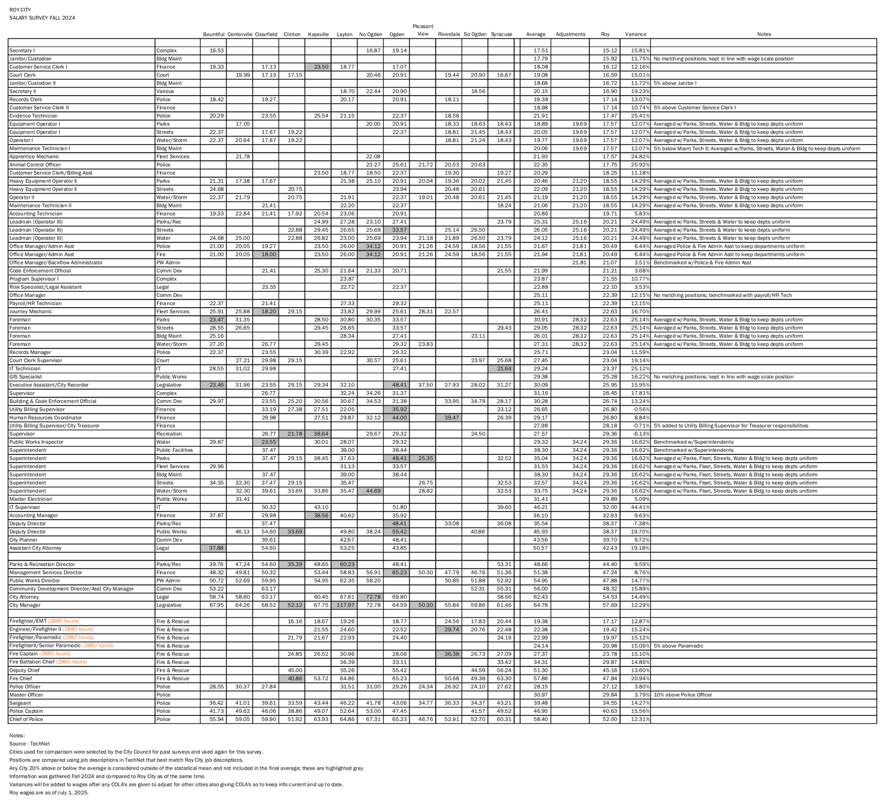

The short version
The 14% is real arithmetic on this sheet: it adds up. What the sheet doesn't show is how many people hold each job, and the comparison cities, job matches and adjustments were all chosen in-house. Measured the other way, as a share of the other cities' pay, the same numbers come out to 12%.
What the survey looked like
It is a single printed page titled "ROY CITY · SALARY SURVEY FALL 2024." Each row is one Roy job title and department. Across the row are hourly pay rates for the same kind of job in up to 12 cities, then an average, sometimes an "adjustment," Roy's own rate, the "variance" (the gap) and a note.
The 12 cities: Bountiful, Centerville, Clearfield, Clinton, Kaysville, Layton and Syracuse in Davis County; North Ogden, Ogden, Pleasant View, Riverdale and South Ogden in Weber County.

What the notes at the bottom say (word for word):
- "Source - TechNet"
- "Cities used for comparison were selected by the City Council for past surveys and used again for this survey."
- "Positions are compared using job descriptions in TechNet that best match Roy City job descriptions."
- "Any City 20% above or below the average is considered outside of the statistical mean and not included in the final average; these are highlighted gray."
- "Information was gathered Fall 2024 and compared to Roy City as of the same time."
- "Variances will be added to wages after any COLA's are given to adjust for other cities also giving COLA's so to keep info current and up to date."
- "Roy wages are as of July 1, 2025."
How the 14% is figured
- Write down what 11 cities pay a sergeant an hour: $33.59 (Clinton) up to $46.22 (Layton).
- Leave out any city 20% above or below the average (shaded gray). None here.
- Average what's left: $39.48.
- Roy pays a sergeant $34.55.
- Gap: $39.48 − $34.55 = $4.93. The sheet divides by Roy's pay: $4.93 ÷ $34.55 = 14.27%.
Do that for all 81 rows, then average the 81 gaps: 14.1%. That is the city's "14% below."
flowchart TD A["Pay for one job in up to 12 cities"] --> B["Leave out gray cities
(20% above or below)"] B --> C["Average what's left"] C --> D["Compare to Roy's pay
= that job's 'variance'"] D --> E["Average all 81 variances
= about 14%"] E --> F["'Wage correction' raises
$1,207,371 in the tax increase"]
How a one-page sheet becomes a property-tax increase.
How a 14% pay gap became a 34% tax increase
The two percentages measure different things. The 14% is how far behind Roy says its pay is. The 34% is how much more property tax it takes to pay for the raises. Roy's property tax brings in about $5.1 million a year ($5,106,044), so every dollar of raises is a much bigger share of that tax.
| What the increase pays for | Dollars | Share of Roy's property tax |
|---|---|---|
| "Wage correction" raises (the 14% gap) | $1,207,371 | 23.65% |
| 2.8% cost-of-living raise | $348,179 | 6.82% |
| March 2026 2.5% raise, already given | $195,550 | 3.83% |
| Total | $1,751,100 | 34.29% |
Source: Roy City Council Aug. 11, 2026 agenda packet, alternative schedule (the plan adopted).
The survey's own note says the gaps "will be added to wages after any COLA's are given," which is why the cost-of-living raise and the wage corrections are counted separately.
What the numbers show
The Hive copied every number on the sheet and redid the math. The averages check out: every average on the sheet matches once the gray cells are left out, and every variance matches its row. These are the things the math doesn't show on its face.
- The gap is measured from Roy's pay, not the other cities'. If Roy pays $100 and others average $114, the sheet calls it 14% (14 ÷ 100). Measured as a share of what other cities pay (14 ÷ 114), Roy is about 12% lower. Across the sheet, that way comes out to 12.0%.
- Every job title counts the same. The sheet doesn't show how many employees hold each job. IT Supervisor (+44.41%) moves the average as much as Police Officer (+3.80%).
- 12 rows have no outside city to compare, or only one. Ten rows have none, including both janitor jobs, Customer Service Clerk II, Master Officer, Senior Paramedic and GIS Specialist. Their gaps were set by rule, for example "5% above Janitor I" or "kept in line with wage scale position."
- 25 rows use a figure shared across departments. The "Adjustments" column replaces the row's own average "to keep depts uniform." Those 25 rows average a 16.5% gap. Rows that use their own city comparison average about 13.5%.
- The gray cells don't always follow the 20% rule. Some cities more than 20% off were kept, like Riverdale for Firefighter/EMT (+26.7%), and some within 20% were dropped, like Kaysville for Accounting Manager (+5.4%). Applying the rule the same way to every row moves the total from 14.11% to 14.18%. It doesn't change the bottom line.
- "Median" vs. "average." The city's argument says Roy is "14% below median wages," but the sheet uses averages. Using medians instead gives about 14.3%, so that wording doesn't change the result.
- Two dates. One note says the city data "was gathered Fall 2024 and compared to Roy City as of the same time." The next says "Roy wages are as of July 1, 2025."
- Fire jobs are in the survey, but not in the plan that passed. Eight fire rows average a 15.4% gap. Roy's Aug. 11 packet removed Fire from the alternative schedule the council adopted (Fire's original share was $133,344 for the cost-of-living raise and $663,530 for wage corrections), listing it as a "Reduction of Fire Department"; Roy's fire service is set to move to the Weber Fire District. Without the fire rows, the sheet's average is 14.0%.
What the survey leaves out: retirement
The survey compares hourly wages only. On top of wages, Roy pays into state retirement for its employees. These figures are from Roy's audited financial report for the year ended June 30, 2025 (pages 69–79).
| Retirement, year ended June 30, 2025 | Roy City paid | Employees paid |
|---|---|---|
| State pension systems (Utah Retirement Systems) | $2,023,991 | $308,356 |
| 401(k) plan | $106,740 | $53,624 |
| 457 plan | $0 | $49,837 |
| Total | $2,130,731 | $411,817 |
- For most longtime (Tier 1) employees, the city pays 16.97% of pay into the pension and the employee pays nothing. For longtime police it is 35.21%.
- For newer (Tier 2) employees in the 401(k)-only option, the city pays 10% of pay into the employee's 401(k) (14% for police and fire), plus 5.19% (12.49% for police) that goes toward older pension costs. The employee isn't required to add anything.
- The city's 401(k) payments rose from $63,990 in 2023 to $95,378 in 2024 and $106,740 in 2025.
Source: Roy City Annual Comprehensive Financial Report, FY2025, Note 4 (contribution rates as of June 30, 2025; contributions for the year).
Weighted by Roy's actual payroll
The survey counts every job title once. Roy's own pay records on Transparent Utah (State Auditor) show how many people hold each job. For fiscal 2026 (July 2025 to June 2026), the Hive matched Roy's full-time pay records (those with at least $30,000 in wages) to the survey's job rows.
The two largest groups are Master Officer (19 records, a 3.79% gap on the survey) and Police Officer (11 records, 3.80%). Police & Animal Services gets the largest share of the wage-correction raises, $488,257.
Pay and benefits, all Roy City records: fiscal 2026 wages of $13,746,947 and benefits of $6,051,776. Benefits add about 44 cents for every dollar of wages. The survey compares wages only.
Source: Transparent Utah, Office of the State Auditor, employee compensation records for Roy City, fiscal years 2024–2026, pulled Oct. 27, 2026 by job-title search. Records are by job title, so a person who changed jobs during the year can appear twice. Six records (a billing clerk, the judge, a shop foreman and three "Captain" records with no department) had no clear match and were left out of the weighted figure.
The separate hearing on top officials' raises
State law requires a separate public hearing, with at least 7 days' notice, on raises for the city manager, city attorney, department heads and their deputies. The law says it comes "before a governing body may adopt a final budget or a final amended budget that includes a compensation increase" for those officers (Utah Code 10-3-818(2)).
- Aug. 11, 2026: the council adopted the final FY2027 budget (Resolution 26-24), with a 2.8% cost-of-living raise and "wage correction adjustments to all full-time employees." The agenda lists one public hearing, on the budget and tax increase.
- Oct. 20, 2026: the agenda lists a public hearing on Ordinance 26-15, "Enacting Compensation Increases for Specific City Officers." The staff memo says state law "requires the positions listed in Exhibit A to have a separate public hearing." The agenda was posted Oct. 17.
- What Exhibit A lists: merit increases of up to 2.5% (city manager, attorneys, directors and deputies, recorder, treasurer) and up to 3.75% (police chief, police captains, fire chief, fire deputy chief, justice court judge). It doesn't list the 2.8% cost-of-living raise or the wage corrections.
- Mayor and council: the memo says they are "not eligible for merit increases" and their pay stays at $13,804 (mayor) and $9,364 (each council member) a year.
Not yet known: whether the Oct. 20 ordinance passed (minutes not posted), whether a separate notice ran 7 days ahead, and whether the cost-of-living raise and wage corrections for these officers had their own hearing before Aug. 11. The Hive found none in Roy's posted 2026 agendas and minutes from May 5 through Aug. 11.
City by city: how far above Roy each one pays
Average gap across the jobs each city could be matched on. Which cities are on the list changes the answer: Clinton and Pleasant View pay close to Roy; Ogden and North Ogden pay a lot more. The sheet says the City Council picked these cities.
Who pays less than Roy?
No city on the list pays less overall. Job by job, the sheet has 449 city-to-Roy comparisons, and in 65 the other city pays less. Clinton pays less on 14 of its 28 matched jobs, including City Manager, Chief of Police, Fire Chief and Sergeant. Clearfield pays less on 12 of 47, South Ogden on 7 of 32 (including Police Officer), and Pleasant View on 6 of 17 (including City Manager, Police Officer and Chief of Police).
Of the 34 gray cells the city left out of its averages, 13 were cities paying less than Roy and 21 were cities paying more. On the City Manager row, Roy pays $57.69 an hour. The only two cities that pay less, Clinton ($52.12) and Pleasant View ($50.30), were both left out, along with Layton ($117.97).
The city's August 2025 compensation worksheet also listed West Haven, South Weber and West Bountiful. They are not on this sheet; North Ogden, the city with the biggest gap (+26.0%), is.
Are these cities Roy's size?
| City | People (2020 Census, rounded) | Gap over Roy |
|---|---|---|
| Roy | 39,000 | — |
| Ogden | 87,000 | +24.3% |
| Layton | 82,000 | +21.1% |
| Bountiful | 46,000 | +9.9% |
| Kaysville | 33,000 | +20.2% |
| Syracuse | 32,000 | +11.0% |
| Clearfield | 32,000 | +11.4% |
| Clinton | 23,000 | +2.1% |
| North Ogden | 21,000 | +26.0% |
| South Ogden | 17,500 | +7.7% |
| Centerville | 17,000 | +13.9% |
| Pleasant View | 11,000 | +4.1% |
| Riverdale | 9,400 | +13.3% |
Four cities are near Roy's size (Bountiful, Kaysville, Syracuse, Clearfield). Ogden and Layton are about twice as big, and half the list is under 25,000 people. Size doesn't line up with the gap: North Ogden is about half Roy's size and shows the largest gap.
Roy pays 20%+ more 10-20% more under 10% more
Roy and the 12 comparison cities, shaded by each city's average gap over Roy. City lines: U.S. Census Bureau.
Where the raise money goes
In the plan the council adopted, $1,207,371 of the $1,751,100 increase is "wage correction" raises, split across 13 general-fund departments (Roy City Aug. 11, 2026 packet, alternative schedule). The biggest share, $488,257 (40%), goes to Police & Animal Services. On the sheet, the police jobs with the smallest gaps are Police Officer (+3.80%) and Master Officer (+3.79%). The sheet doesn't show how many officers there are or how the $488,257 was split among police jobs.
Wage-correction raises by department, alternative schedule. Separate 2.8% cost-of-living raises total $348,179.
Every row on the sheet
Tap any column heading to sort. Gray, crossed-out numbers are the cities the city left out of that average. Turn on "Show the 12 cities" to see every city's pay.
Pay is hourly. Fire rows are based on 2,880 hours a year, as the sheet notes. "Cities" is how many cities had a matching job. A blank Adjusted column means the row used its own average.
Questions Worth Asking, and Who to Ask
Behind this piece
Posted Oct. 27, 2026.
Sources
Sources (click to expand)
- Roy City, "Salary Survey Fall 2024" (one page), released under a GRAMA public records request. A tip came in with the document. Read from the page itself and checked against a high-resolution image for the gray cells. Image of the sheet
- Roy City Council, Aug. 11, 2026 agenda packet: original and alternative property tax impact schedules, department COLA and wage-correction lines. Link
- Roy City, 2026 Referendum Petition Response — Insufficient (Oct. 20, 2026), including the city's argument ("14% below median wages"). Link
- Roy City Council, Oct. 20, 2026 agenda and packet: Ordinance 26-15, staff memo and Exhibit A. Link
- Transparent Utah (Office of the State Auditor), Roy City employee compensation, FY2024–FY2026. Link
- Roy City Annual Comprehensive Financial Report, FY2025, Note 4 (retirement). Link
- Roy City Council work session packet, Aug. 5, 2025: compensation worksheet citing the "draft Salary Survey." Link
- Roy City Council, Aug. 5, 2025 minutes: Dandoy and Scadden on the survey. Link
- Roy City Council, Aug. 19, 2025 minutes (draft): the survey called "only a draft." Link
- U.S. Census Bureau, 2020 Census populations (rounded; as listed by citypopulation.de and biggestuscities.com).
- Utah Code § 10-3-818 (pay for municipal officers; separate hearing for executive pay increases). Link
- Utah Code § 59-2-919 (Truth in Taxation notice and hearing). Link
- The Hive's Roy Prop 10 case file. Link